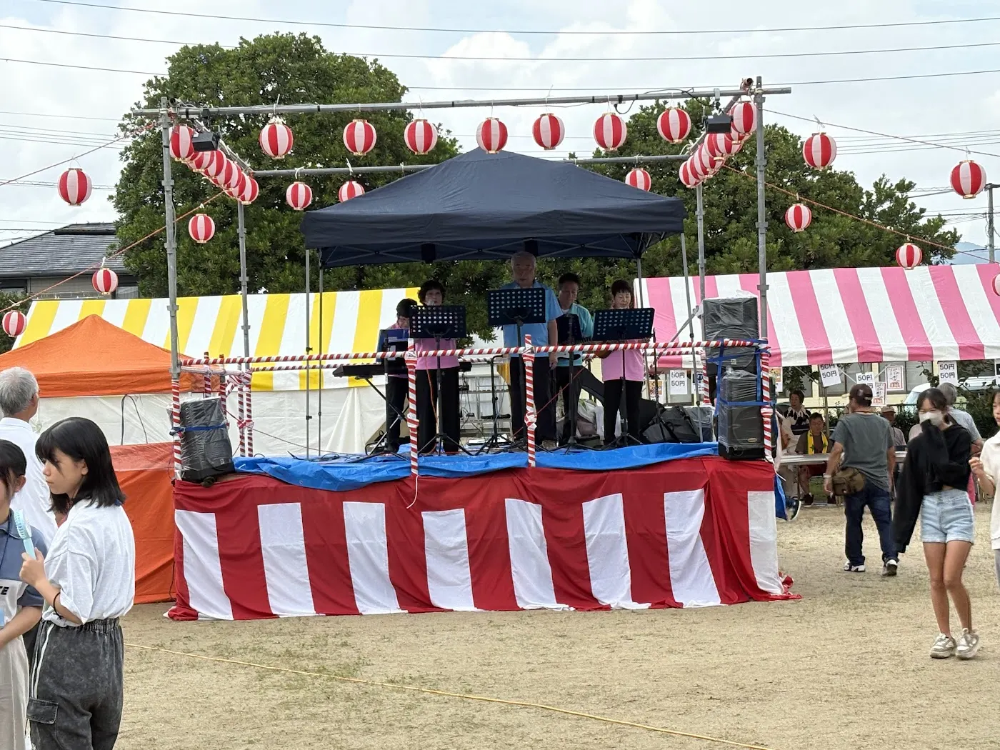
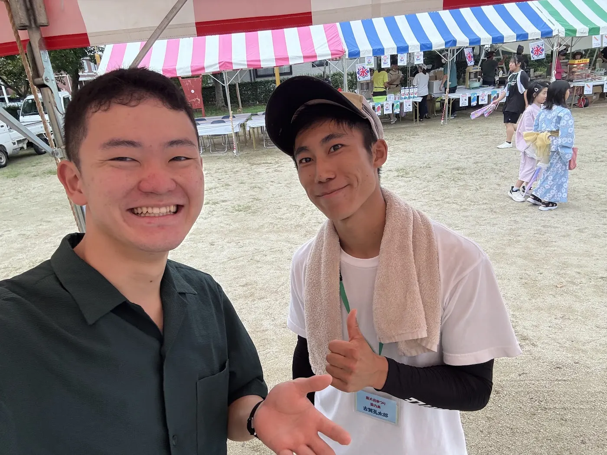
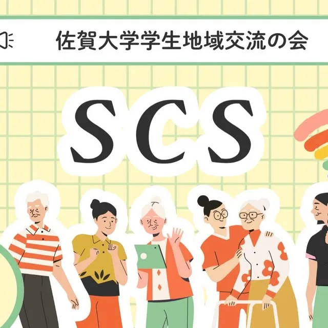

SCS
佐賀大学 学生地域交流の会(SCS) ／ 代表
地域に飛び込み、そこに暮らす人たちと同じ目線でつながる学生ボランティア団体。医学科・看護学科の学生を中心に、団地の高齢者サロンでの健康講話や体操、子どもの居場所づくりのサポート、公民館での健康講演などを続けています。


FESTIVAL
地域の夏祭りにSCSとしてブースを出展。血圧測定、心肺蘇生(CPR)体験、妊婦体験ジャケットなど、子どもから大人まで楽しみながら健康について学べる場をつくりました。





城北サロンで、熱中症・紫外線対策のお話と脳トレ。
@scs.official2025
子どもの居場所へ。宿題のあとは外でも中でも元気いっぱい。
@scs.official2025
城北サロンで「部員の趣味紹介」。折り紙・筋トレ・書道・演劇。
@scs.official2025
材木町公民分館で熱中症をテーマに健康講演。
@scs.official2025
城北団地の高齢者サロンでコグニサイズ(後出しジャンケン)。
@scs.official2025
上高木公民館での子どもの居場所づくりをサポート。
@scs.official2025
2026年度 新メンバー募集中!地域に飛び込み、同じ目線でつながる。
@scs.official2025GALLERY